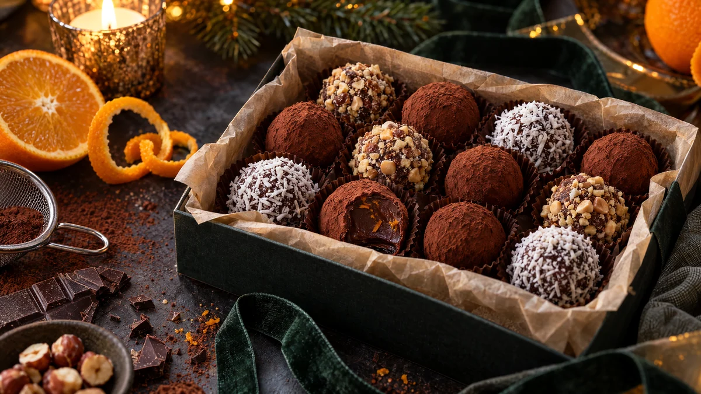

RESTFEST · RECEPTGodis & konfekt
Chokladtryfflar med apelsin, rullade i kakao
En kaka mörk choklad, en skvätt havregrädde och skalet från en apelsin. Ganachen rörs blank, kyls och rullas till små, ojämna tryfflar som får ett sammetslent täcke av kakao. Fransk konfekt som smälter på tungan, helt vegansk utan att någon märker det.
- Förberedelse
- 20 min + 2 tim i kylen
- Tillagning
- 5 min
- Portioner
- ca 25 tryfflar
- Nivå
- Nybörjare
 Det här behöver du
Det här behöver du
Tryck på + vid det du behöver köpa.
Ganache
Att rulla i
Gör så här
- Hacka chokladen fint och lägg den i en skål.
- Värm havregrädden och kokosoljan i en liten kastrull tills det precis börjar sjuda.
- Häll den heta grädden över chokladen och låt stå orörd i 2 minuter.
- Rör från mitten och utåt med en slickepott, tills ganachen är slät och blank. Rör ner apelsinskal och salt.
- Täck skålen och ställ den i kylen i minst 2 timmar, tills ganachen är fast nog att forma.
- Ta upp små portioner med en tesked och rulla dem snabbt till kulor mellan kalla händer. De behöver inte vara perfekta, ojämna tryfflar ser mer hantverksmässiga ut.
- Rulla tryfflarna i kakao, eller i hasselnötter eller kokos för variation. Förvara dem i kylen.
Dekoration och servering
- Lägg tryfflarna i små pappersformar i en ask, gärna i blandade sorter.
- Ta fram dem 10 minuter före servering, då är de som krämigast.
- Byt apelsinskalet mot 1 msk starkt kaffe, en nypa kardemumma eller lite chili.
- Tryfflarna håller ca 1 vecka i kylen och 2 månader i frysen.
Mått och ugnstemperaturer
Måtten är svenska (dl, msk, tsk, krm). Ugnstemperaturerna gäller vanlig ugn med över- och undervärme; med varmluft, sänk med 20 grader.